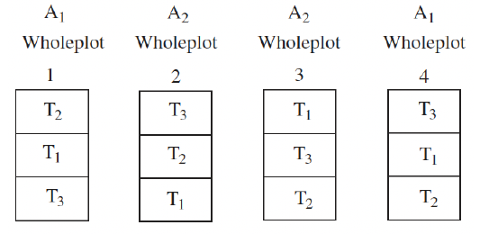
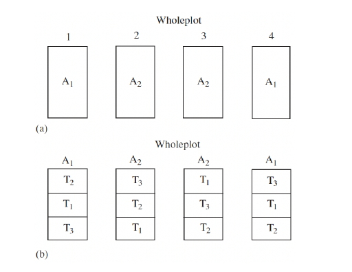

Subsection 14.1.1 Split-Plot Design
Consider a two-way factorial treatment structure. A random assignment of one factor would be difficult to apply to the experimental units of the other factor; for example, if we consider the yields of three different varieties of cottons compared under two different irrigation systems with two observations at each treatment combination, we see that the irrigation systems must apply the water to large sections of land and that a CRD might be time-consuming.
Each irrigation system would be applied to two larger "whole plots" and the three varieties of cottons would be planted in three "subplots" within each whole plot:

A split-plot design is applicable to factorial treatment structure only with two different sizes of experimental units: whole-plot experimental unit or main unit; subplot experimental unit or subunit. Split-plot design involves more than one randomization when assigning treatments to experimental units. Consider Factor A in a CRD with \(n\) replications per level. The \(a\) levels of factor A are applied to a whole plot, which is then subdivided into subplots to which one of the \(b\) levels of Factor B are assigned, as in the image below.

For experimental error, we consider the variance among things treated alike. In split-plot design, the two factors A and B have two different sizes of experimental units. This means there are two sources of error variance considered: variability between whole plots within each level of factor A; and variability among subplots.
This makes the treatment structure \(a\times b\) factorial with factors A and B as whole-plot and subplot treatment, respectively. The design structure is split-plot in a CRD with \(n\) replications.
A statistical effects model for an \(a\times b\) factorial treatment structure in a completely randomized split-plot design is given by
\begin{equation*}
Y_{ijk} = \mu + \alpha_i + \delta_{k(i)} + \beta_j + (\alpha\beta)_{ij} + \varepsilon_{ijk}
\end{equation*}
where \(\alpha_i + \delta_{k(i)}\) is focused on the whole-plot, while the trailing three terms focus on the subplot. Here, \(i=1,...,a\text{,}\) \(j=1,...,b\text{,}\) and \(k=1,...,n\text{.}\) Specifically, we also have
\(Y_{ijk}\text{:}\) the \(k-\)th response of \(A = i,B=j\)
\(\mu\text{:}\) the fixed overall mean
\(\alpha_i, \beta_j\text{:}\) the fixed main effects of \(A=i,B=j\text{,}\) respectively
\((\alpha\beta)_{ij}\text{:}\) the fixed interaction effects of \(A =i,B=j\)
\(\delta_{k(i)}\text{:}\) random error due to the \(k-\)th experimental unit within \(A = i\text{,}\) with \(\delta_{k(i)}\sim^{iid} N(0,\sigma^2_\delta)\)
\(\varepsilon_{ijk}\text{:}\) random error due to the \(k-\)th experimental unit in \(A=i,B=j\) such that \(\varepsilon_{ijk}\sim^{iid} N(0,\sigma^2_\varepsilon)\text{.}\)
Note that the error terms are independent of each other. This gives the table below:
|
Source |
df |
MS |
EMS |
| Whole Plot Analysis |
\(A\) |
\(a-1\) |
MSA |
\(\sigma_\varepsilon^2 + b\sigma_\delta^2 + \dfrac{nb}{a-1}\sum \alpha_i^2\) |
|
WP Error |
\(a(n-1)\) |
MSWPE |
\(\sigma_\varepsilon^2 + b\sigma_\delta^2\) |
| Subplot Analysis |
\(B\) |
\(b-1\) |
MSB |
\(\sigma_\varepsilon^2 + \dfrac{na}{b-1}\sum \beta_j^2\) |
|
\(AB\) |
\((a-1)(b-1)\) |
MSAB |
\(\sigma_\varepsilon^2 + \dfrac{n}{(a-1)(b-1)}\sum (\alpha\beta)_{ij}\) |
|
SP Error |
\(a(n-1)(b-1)\) |
MSSPE |
\(\sigma_\varepsilon^2 \) |
|
Total |
\(abn-1\) |
For interaction effects, we reject \(H_0:(\alpha\beta)_{ij} = 0\) when
\begin{equation*}
F = \dfrac{MSAB}{MSSPE} \geq F_{\alpha,(a-1)(b-1),a(n-1)(b-1)}
\end{equation*}
If the interaction is insignificant, we proceed to the main effects as follows:
Reject \(H_0: \alpha_1 = \cdots = \alpha_a = 0\) if
\begin{equation*}
F = \dfrac{MSA}{MSWPE}\geq F_{\alpha, a-1,a(n-1)}
\end{equation*}
Reject \(H_0: \beta_1 = \cdots = \beta_b = 0\) if
\begin{equation*}
F = \dfrac{MSB}{MSSPE} \geq F_{\alpha,b-1,a(n-1)(b-1)}
\end{equation*}
In the event that the main effects are significant, we can compare the average responses to the two levels of each factor:
|
estimates |
standard error estimates |
df for \(t-\)statistic |
| \(\alpha_i - \alpha_{i'}\) |
\(\overline{Y}_{i\cdot\cdot} - \overline{Y}_{i'\cdot\cdot}\) |
\(s_{\overline{Y}_{i\cdot\cdot} - \overline{Y}_{i'\cdot\cdot}} = \sqrt{\dfrac{1}{nb}\lrpar{2(\hat{\sigma}^2_\varepsilon + b\hat{\sigma}^2_\delta)}}\) |
\(a(n-1)\) |
| \(\beta_j - \beta_{j'}\) |
\(\overline{Y}_{\cdot j\cdot} - \overline{Y}_{\cdot j'\cdot}\) |
\(s_{\overline{Y}_{\cdot j\cdot} - \overline{Y}_{\cdot j'\cdot}} = \sqrt{\dfrac{1}{na}\cdot 2\hat{\sigma}^2_\varepsilon}\) |
\(a(n-1)(b-1)\) |
The above standard error formulae can be generalized for any contrast such that \(L_A = \sum a_i\alpha_i\) or \(L_B = \sum b_j\beta_j\) by replacing 2 with \(\sum a_i^2\) or \(\sum b_j^2\text{.}\)
Note that for \(H_0: \alpha_i = \alpha_j = 0\text{,}\) we have
\begin{equation*}
t = \dfrac{\overline{Y}_{i\cdot\cdot - \overline{Y}_{i'\cdot\cdot}}}{\sqrt{\dfrac{1}{nb}\lrpar{2(\hat{\sigma}^2_\varepsilon + b\hat{\sigma}^2_\delta)}}}
\end{equation*}
with
\begin{equation*}
t \sim t_{df}
\end{equation*}
where df is described in the table. Similarly, when testing the \(\beta_j\) terms, we have
\begin{equation*}
t = \dfrac{\overline{Y}_{\cdot j\cdot - \overline{Y}_{\cdot j'\cdot}}}{\sqrt{\dfrac{1}{na}\cdot 2\hat{\sigma}^2_\varepsilon}}
\end{equation*}
We can perform pairwise comparison of levels of factors A and B in split-plot design:
| Method |
Cutoff |
Decision |
| Fisher (A) |
\(LSD = t_{\alpha/2,a(n-1)}\sqrt{\dfrac{2}{nb}\lrpar{\hat{\sigma}^2_\varepsilon + b\hat{\sigma}^2_\delta}}\) |
Reject \(H_0: \alpha_i - \alpha_{i'}=0\) if \(|\overline{Y}_{i\cdot\cdot} - \overline{Y}_{i'\cdot\cdot}|\geq LSD\)
|
| Fisher (B) |
\(LSD = t_{\alpha/2,a(b-1)(n-1)}\sqrt{\dfrac{2}{na}\hat{\sigma}_\varepsilon^2}\) |
Reject \(H_0: \beta_j - \beta_{j'}=0\) if \(|\overline{Y}_{\cdot j \cdot} - \overline{Y}_{\cdot j'\cdot}|\geq LSD\)
|
| Tukey (A) |
\(HSD = q_{\alpha,a,a(n-1)}\sqrt{\dfrac{1}{nb}\lrpar{\hat{\sigma}^2_\varepsilon + b\hat{\sigma}^2_\delta}}\) |
Reject \(H_0: \alpha_i - \alpha_{i'}=0\) if \(|\overline{Y}_{i\cdot\cdot} - \overline{Y}_{i'\cdot\cdot}|\geq HSD\)
|
| Tukey (B) |
\(HSD = q_{\alpha,b,a(b-1)(n-1)}\sqrt{\dfrac{1}{na}\hat{\sigma}^2}\) |
Reject \(H_0: \beta_j - \beta_{j'}=0\) if \(|\overline{Y}_{\cdot j \cdot} - \overline{Y}_{\cdot j'\cdot}|\geq HSD\)
|
| Scheffe (A) |
\(S = \sqrt{(a-1)F_{\alpha,a-1,a(n-1)}}\cdot \sqrt{\dfrac{2}{nb}\lrpar{\hat{\sigma}^2_\varepsilon + b\hat{\sigma}^2_\delta}}\) |
Reject \(H_0: \alpha_i - \alpha_{i'}=0\) if \(|\overline{Y}_{i\cdot\cdot} - \overline{Y}_{i'\cdot\cdot}|\geq S\)
|
| Scheffe (B) |
\(S = \sqrt{(b-1)F_{\alpha,b-1,a(b-1)(n-1)}}\cdot \sqrt{\dfrac{2}{na}\hat{\sigma}^2_\varepsilon}\) |
Reject \(H_0: \beta_j - \beta_{j'}=0\) if \(|\overline{Y}_{\cdot j \cdot} - \overline{Y}_{\cdot j'\cdot}|\geq S\)
|
If the interaction is significant, then we compare the group means among each treatment combination. The standard error estimates and corresponding df get different depending on the types of comparison we make.
|
estimates |
standard error estimates |
df for \(t-\)statistic |
| \(\mu_{ij} - \mu_{ij'}\) |
\(\overline{Y}_{ij\cdot} - \overline{Y}_{ij'\cdot}\) |
\(\sqrt{\dfrac{2}{n}\cdot \hat{\sigma}^2_\varepsilon}\) |
\(a(n-1)(b-1)\) |
| Difference in B at the same level of A |
| \(\mu_{ij} - \mu{i'j}\) |
\(\overline{Y}_{ij\cdot} - \overline{Y}_{i'j\cdot}\) |
pooled estimates |
Satterthwaite df |
| Difference in A at the same levels of B |
| \(\mu_{ij} - \mu_{i'j'}\) |
\(\overline{Y}_{ij\cdot} - \overline{Y}_{i'j'\cdot}\) |
pooled estimates |
Satterthwaite df |
| Difference in A at different levels of B |
For pooled estimates and Satterthwaite df, we use
\begin{align*}
\text{pooled estimates }\amp = \sqrt{\dfrac{2}{nb}\lrpar{(b-1)SS_{SPErr} + SS_{WPErr}}} \\
\text{Satterthwaite df } \amp = \dfrac{\lrpar{(b-1)SS_{SPErr} + SS_{WPErr}}^2}{\dfrac{((b-1)SS_{SPErr})^2}{a(b-1)(n-1)} + \dfrac{(SS_{WPErr})^2}{a(n-1)}}
\end{align*}
Example 14.1.1.
A study was designed to determine if additional phosphorus applied to the soil would increase the yield of soybeans. There are three major varieties of soybeans of interest (V1, V2, and V3) and four levels of phosphorus (0, 30, 60, and 90 pounds per acre). Researchers have nine plots of land available for the study. Because of the complexities of planting the soybeans on the plots of the given size, it was decided to plant a single variety of soybeans on each plot and then divide each plot into four subplots. Researchers randomly assigned a variety to one plot within each block of three plots and then randomy assigned the levels of phosphorus to the four subplots within each plot.
Identify an experimental design and an appropriate statistical model which are best consistent with the given description of the study.
-
Consider the following ANOVA table:
| Source |
df |
SS |
MS |
| Variety |
2 |
671.81 |
335.90 |
| WP Error |
6 |
6.56 |
1.64 |
| Phosphorus |
3 |
136.12 |
136.12 |
| Variety*Phosphorus |
6 |
117.41 |
19.57 |
| SP Error |
18 |
4.08 |
0.23 |
Under \(\alpha = 0.01\text{,}\) provide your complete conclusion about interaction and main effects.
Solution.
We use a split plot design and the consequent model from above:
\begin{equation*}
Y_{ijk} = \mu + \alpha_i + \delta_{k(i)} + \beta_j + (\alpha\beta)_{ij} + \varepsilon_{ijk}
\end{equation*}
For the interaction, we have
\begin{equation*}
F = \dfrac{19.57}{0.23} \sim F_{6,18}
\end{equation*}
This interaction is not significant. For the main effects, we have
\begin{equation*}
F = \dfrac{335.90}{1.64}
\end{equation*}
for the variety, and
\begin{equation*}
F = \dfrac{136.12}{0.23}
\end{equation*}
for the phosphorus.